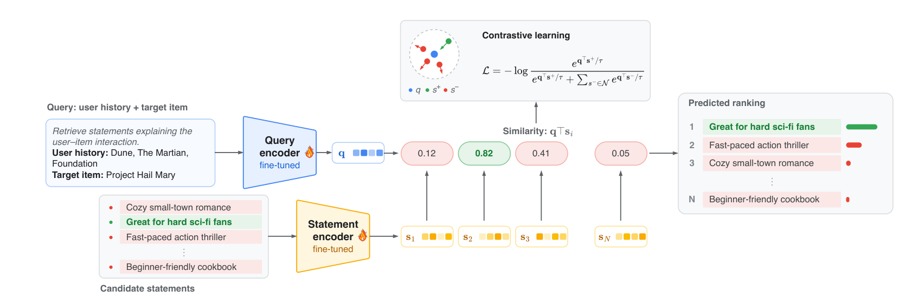
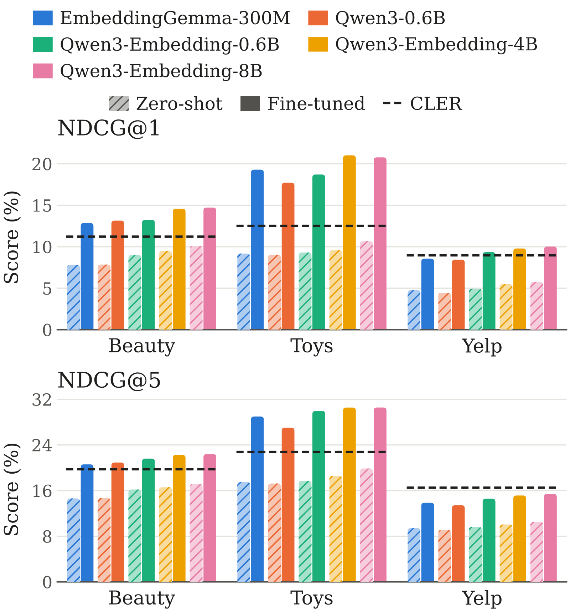
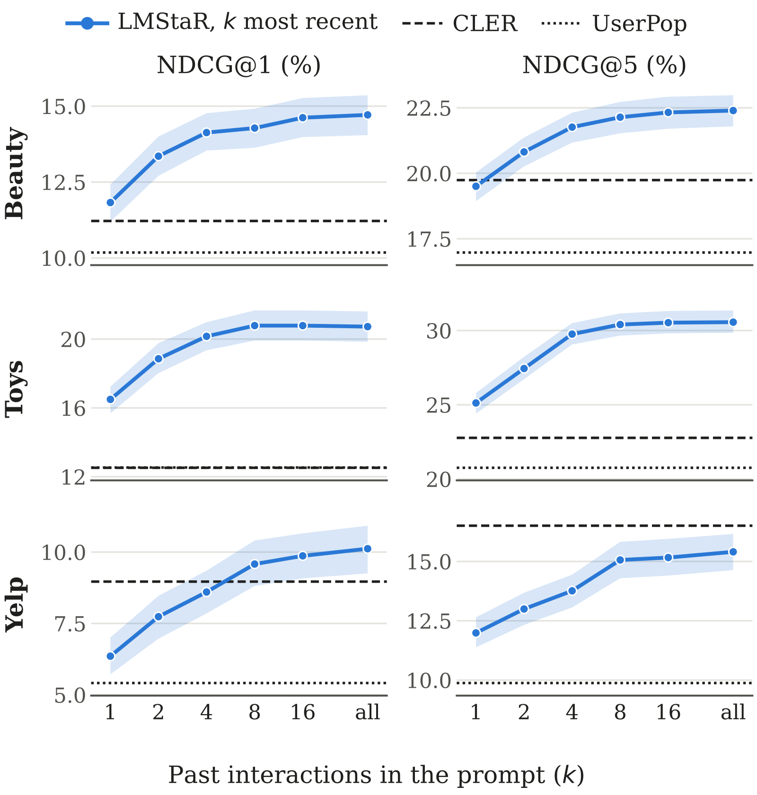

Contents · 8 sections
1What problem is it solving?2How LMStaR picks reasons3How it is trained4Results: the first reason is the most accurate5What does the model rely on to pick reasons?6Limitations as I see them7How a recommendation team could use it8ConclusionSHARE
Worth reading for anyone building explainable recommendation: it shows that for picking each user's first recommendation reason, fine-tuning a text embedding model is more accurate than dedicated collaborative methods. When picking recommendation reasons for a user, earlier methods often fail to beat a simple baseline that only counts which statements appear most in the user's history. The task is to take the short statements extracted and merged from all reviews of an item and pick the few most likely to resonate with this user. LMStaR uses a fine-tuned text embedding model and treats this as retrieval: one encoder reads the user's earlier reviews and the item's information, another reads each statement. In training the two are fine-tuned together so that statements from the review the user actually wrote for this item rank first. On Amazon Beauty, Amazon Toys and Yelp, its first-ranked reason is the most accurate on all three, 1.06 to 8.25 points above CLER, the strongest earlier method.
What problem is it solving?
When a system recommends an item, it can attach a few reasons, such as "great for hard sci-fi fans". These reasons are not written on the spot. They are short statements extracted in advance from many reviews, with statements of the same meaning merged into one.
The paper works on item-level ranking: candidate reasons come only from this item's own reviews. So the hard part is not finding reasons related to the item. It is picking, among this item's reasons, the few that best match this user.
At evaluation time, the user later did write a review of this item, and the statements in that review count as the answers. At recommendation time, the model cannot see that review. It only sees the user's earlier reviews and this item's information.
In this task the simplest baseline, UserPop, is hard to beat. It only looks at which statements appear most often in the user's earlier reviews. On all three datasets, no neighborhood or matrix factorization method, including the versions with added semantic information, beats it on first-rank accuracy or on top-5 ranking quality. The strongest earlier method is CLER, which uses contrastive learning to train ID vectors for users, items and statements, without modeling the text directly.
The data is split by time for each user: the latest interaction is the test, the second latest is validation, and everything earlier is for training. Every test item appears in training, so new items are not tested here.
How LMStaR picks reasons
LMStaR gives users and items no ID vectors; everything is represented as text. It has two encoders.
The first encoder reads one assembled text: a task instruction, the user's earlier interactions, and this item's information. Each earlier interaction includes that item's information and the statements extracted from the user's review. The encoder compresses this text into one vector that stands for "this user looking at this item".
The second encoder compresses each candidate reason into its own vector. The cosine similarity of the two vectors is that reason's score, and reasons are ranked from high to low.
The illustrative example in Figure 1 reads like this. The user's history is all science-fiction novels, and the target item is a sci-fi novel too. Among four candidates, "great for hard sci-fi fans" scores 0.82, "fast-paced action thriller" 0.41, "cozy small-town romance" 0.12, and "beginner-friendly cookbook" only 0.05. So "great for hard sci-fi fans" ranks first. These scores use only the user's earlier reviews and the item's information; the user's new review of this book does not exist yet.

How it is trained
Training data is built in time order. For a user's t-th interaction, the query holds only the interactions before it, so each user's first interaction serves only as history, never as a training target.
Positives are the statements that this review really contains. Negatives are the item's other statements, of which training samples a subset.
One interaction often has several positives. The paper compares each positive with the negatives separately and averages those losses. That way a well-ranked positive cannot cover for a badly ranked one; each must rank above the negatives. Hoot says

Illustrative example. The two right reasons get separate losses. The well-ranked one has a tiny loss and cannot cover for the other. After averaging, training mainly pushes the badly ranked one. Source: paper §3.3.2 multi-positive contrastive loss; scores and temperature are illustrative
Both encoders start from Qwen3-Embedding-8B and are fine-tuned with LoRA; each has its own parameters, trained together.
Results: the first reason is the most accurate
| NDCG@1 (%) | Beauty | Toys | Yelp |
|---|---|---|---|
| UserPop | 10.18 | 12.54 | 5.41 |
| CLER | 11.22 | 12.52 | 8.97 |
| Qwen3-Embedding-8B (not fine-tuned) | 10.11 | 10.67 | 5.78 |
| LMStaR | 14.72 | 20.77 | 10.02 |
(From Table 1 of the paper.)
LMStaR has the highest NDCG@1 on all three datasets, 3.50, 8.25 and 1.06 points above CLER. This means its first-ranked reason is the most accurate.
On Beauty and Toys it is also best on NDCG@5, the top-5 ranking quality. Yelp is the exception: on the top 5 it is 1.10 points below CLER.
Without fine-tuning, Qwen3-Embedding-8B already beats every neighborhood and matrix factorization method. Fine-tuning adds another 4.62, 10.10 and 4.24 points of NDCG@1.
It holds for other backbones too. All five backbones, from the 300M-parameter EmbeddingGemma to the 8B Qwen3-Embedding, beat CLER on Beauty and Toys after fine-tuning. Every fine-tuned backbone beats every backbone that is not fine-tuned. On the two backbones where both were compared, LoRA fine-tuning scores 0.84 to 2.66 NDCG@5 points above fine-tuning all parameters.

What fine-tuning learns also carries across domains. Trained on Beauty and used directly on Toys, it still scores 6.01 points of NDCG@1 above CLER trained on Toys. Every transfer, though, stays below training in the same domain.
What does the model rely on to pick reasons?
At test time the authors change the query and watch how much the score drops. Candidate reasons and answers stay the same.
| Changed query (NDCG@5 drop, points) | Beauty | Toys | Yelp |
|---|---|---|---|
| Another user's history | 6.73 | 13.20 | 5.65 |
| Target item replaced by a random item | 0.97 | 0.41 | 0.36 |
(From Table 4 of the paper.)
Swapping the user's history costs the most. With another user's history, it falls below UserPop on all three datasets. Swapping the item information barely matters. The authors note this is partly because candidate reasons already come only from this item, so item information has little to add.
The gain from history comes mostly from the latest few interactions. With only the single latest interaction in the query, it already beats UserPop on all three datasets.
Going from 1 interaction to a full history, NDCG@5 rises from 19.5 to 22.4 on Beauty and from 25.1 to 30.6 on Toys. The curves rise fastest over the first few, which means the latest few interactions already carry most of the useful information.
The authors also tried which past interactions to pick. Besides the most recent, they tried picking by similarity to the target item. Neither alternative is consistently better than picking by time. With just 1 interaction, picking by semantic similarity raises NDCG@1 on Beauty by about 1.4 points; with more, the differences are small. So picking the latest few is a good enough default.
There is also a hint about why it loses on Yelp's top 5. When test users are grouped by history length, CLER's advantage sits mainly with users who have only 4 to 7 interactions, a group that makes up 49.2% of Yelp test users. In groups with longer histories the gap shrinks or reverses. The authors caution that this is only a grouped observation; the groups also differ in other ways.

Limitations as I see them
First, the answers are extracted and merged automatically. A statement the user did not write is not necessarily a bad fit. A high ranking score also does not mean users find the reason useful or truthful.
Second, the candidate pool may include statements from test-period reviews that did not yet exist at recommendation time. Test items have all appeared in training, so cold-start items are not tested.
Third, why it loses to CLER on Yelp's top 5 is still open. The authors offer two guesses and test neither: one query vector may not hold several kinds of reasons, or CLER's collaborative signals may add information the text lacks.
How a recommendation team could use it
- If you already have a library of reasons extracted from reviews, first try an off-the-shelf text embedding model without fine-tuning; it already beats many collaborative methods.
- Always put the user's own earlier reviews in the query; the latest few are enough to start.
- If you want all of the top few to be right, not only the first, consider combining it with collaborative signals like CLER's, and at least compare first on data like Yelp.
Conclusion
The paper's value is turning reason ranking into pure text retrieval and showing that a fine-tuned embedding model picks reasons mainly from the user's own earlier reviews. The first reason is the most accurate on all three datasets, but on Yelp its top 5 still trail CLER.
| Dimension | Assessment |
|---|---|
| Importance | Medium. Explainable recommendation is a common need, but offline metrics are still some distance from what users feel |
| Novelty | Medium. Dual encoders with contrastive learning are mature in retrieval; the new part is applying them to reason ranking |
| Evidence | Medium-high. Three datasets, five backbones, cross-domain and query-change experiments, but the answers are built automatically |
| Engineering cost | Medium. An 8B backbone with LoRA needs GPU training |
| Worth trying | Yes. Teams with a review-based reason library can swap it in for their current ranking module and compare |
How did this read for you?
Hoot made a note. Thanks for the feedback.
One tap, no sign-in; tap again to undo. Only anonymous counts are kept, never who you are.
Discussion
Add experiment details, reproduction notes or a different take. Requires a GitHub sign-in.
Loading the discussion…